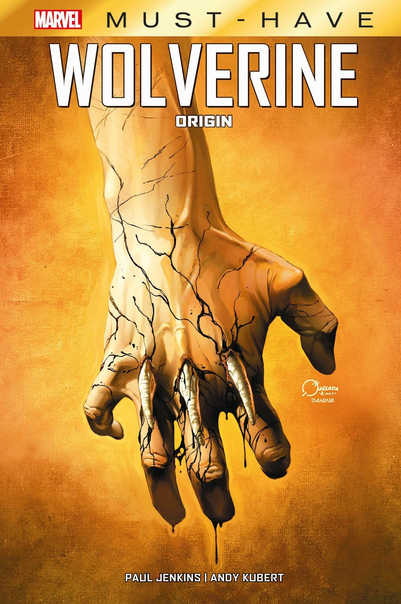

Wolverine: Le origini
USA 2001–2002
Must Have
Le
origini 2001
origini 2001

★ L'inizio della vita di Logan
Il segreto custodito per 27 anni
- Collana
- Marvel Must Have (cartonato)
- Autori
- Paul Jenkins (testi), Andy Kubert e Richard Isanove (disegni), da un soggetto di Bill Jemas e Joe Quesada
- Contiene
- Origin #1–6 (miniserie 2001–02)
- Ambientazione
- Canada, fine Ottocento: l'infanzia di James Howlett
Perché è importante
La storia che la Marvel giurò non sarebbe mai stata raccontata: la vera origine di Wolverine. In una tenuta dell'Alberta di fine Ottocento, il fragile James Howlett scopre nel sangue e nel lutto chi è davvero — gli artigli d'osso, il fattore rigenerante, il primo amore Rose e la fuga verso la natura selvaggia che lo trasformerà in "Logan". Un dramma vittoriano più vicino a Cime tempestose che a un fumetto di supereroi, dipinto dai colori pittorici di Isanove.
Curiosità
Fu pubblicata solo perché i film stavano arrivando: l'editore Bill Jemas convinse la Marvel che era meglio raccontare l'origine su carta prima che lo facesse Hollywood. Il primo albo è oggi uno dei più ricercati degli anni 2000.
Oltre la carta: il prologo di X-Men le origini: Wolverine (2009) — il piccolo James, gli artigli d'osso, la fuga — è l'adattamento diretto di queste pagine.